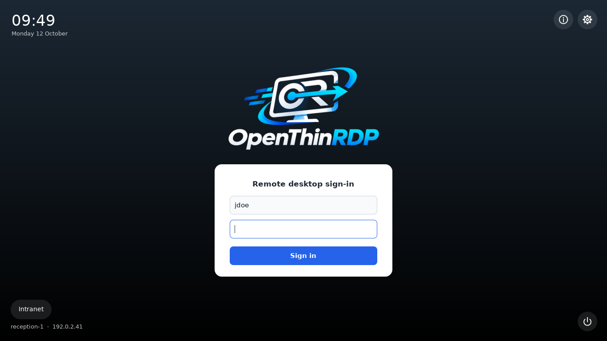
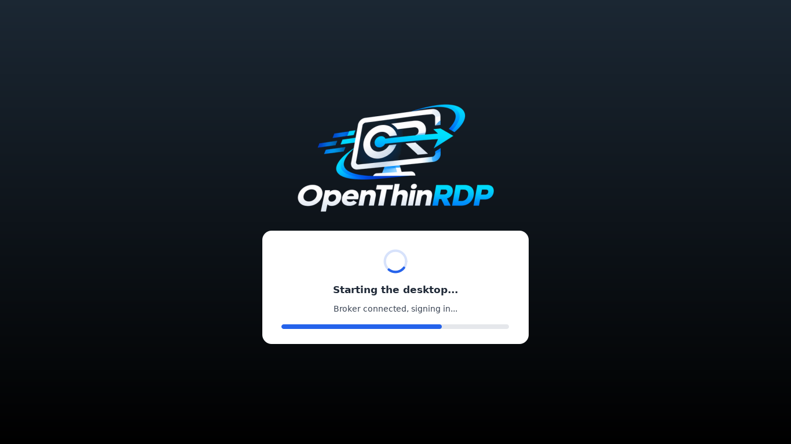
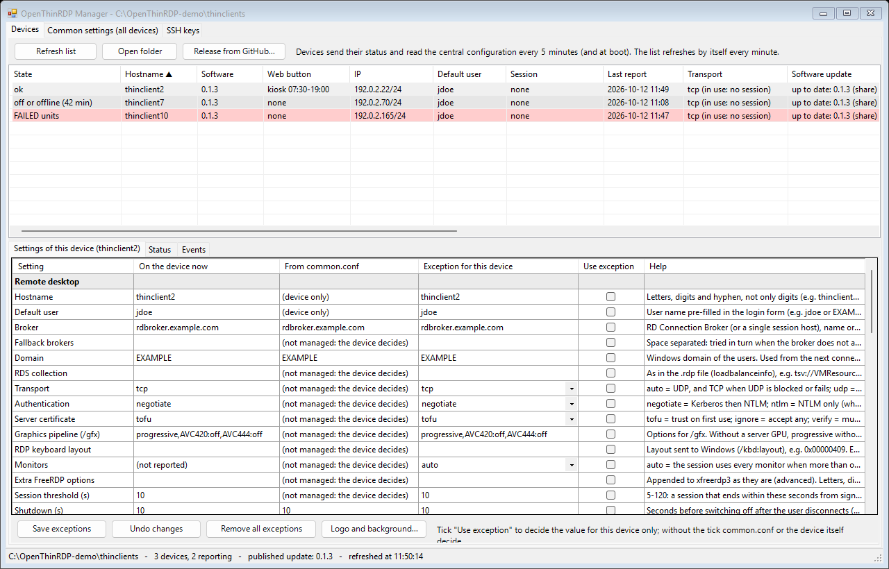
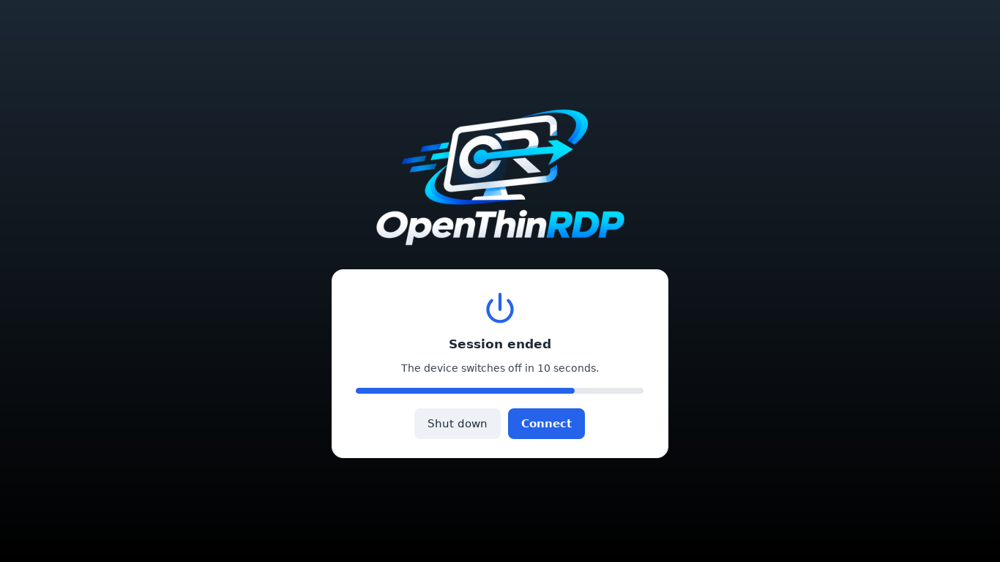
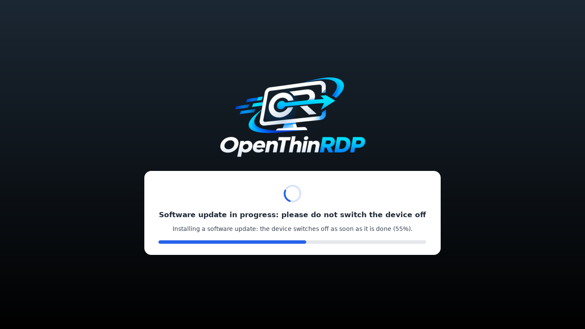
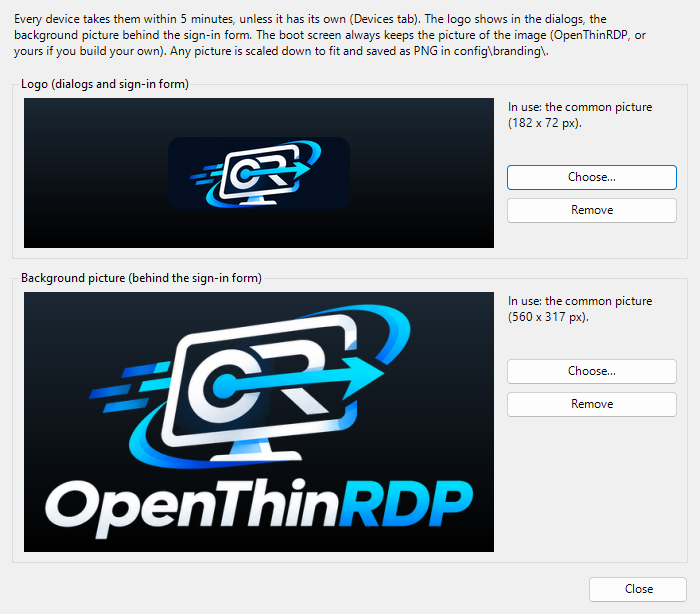

RDP over UDP, on a free thin client
Windows can send the remote desktop over UDP (MS-RDPEMT / MS-RDPEUDP): instead of queueing behind lost TCP packets, it adapts frame rate and quality to the line. Windows' own client has done it for years; on Linux, FreeRDP's UDP transport is still a pull request under review (FreeRDP #13608), so thin client systems built on upstream FreeRDP connect over TCP only. OpenThinRDP ships FreeRDP built with that transport, tested on real thin clients against a Windows 11 VDI, with automatic fallback to TCP.
3 hours, never off UDP
Aggressive soak test: VM CPU at 100 %, 2 % and 10 % packet loss, 15 Mbit/s cap, 40 ms jitter, network cut for 20 s, client killed. Session alive 178 of 178 minutes, always on UDP, never fell back to TCP (results).
Back on UDP after a cut
After a 20 second network cut the session comes back by itself, on UDP again, in about 12 seconds.
Your choice per device
TRANSPORT=auto (UDP, TCP when UDP is blocked), udp (UDP only) or tcp, from the device or centrally for the whole fleet.
What it does
RDP over UDP
FreeRDP 3 built with the UDP transport (MS-RDPEMT / RDPEUDP), still under review upstream: smoother sessions on busy servers, lossy Wi-Fi and VPNs. Automatic fallback to TCP, or force either one per device.
RDS, VDI or a single PC
Through an RD Connection Broker to session hosts or a Hyper-V VDI collection (load balance info, fallback brokers), or straight to any Windows PC with Remote Desktop on.
USB done right for VDI
Webcams with their microphone, signature keys, tachograph keys and other special devices go to Windows as whole USB devices, also when plugged in during the session. Smart card readers through the smart card channel, touch screens as real touch.
Managed from a shared folder
No agent and no management server: devices write their status to an SMB share and read central settings, logo, background and updates from it. A Windows manager (English and Italian, no install) edits it all.
Signed updates
From GitHub releases or from your folder when you decide; never during a session. Debian security updates install by themselves; FreeRDP updates only with tested releases.
Locked down kiosk
Boots in seconds into the sign-in screen: no desktop, no menus, no text consoles. Settings behind a PIN, diagnostics for the help desk, power schedule and Wake-on-LAN.
Try it in five minutes
1. Download the ISO and write it to a USB stick (Rufus in DD mode, balenaEtcher or dd).
2. Boot the PC from the stick: the live system starts by itself after 10 seconds and never writes to the disk.
3. Set your broker (or the name of a Windows PC) and sign in.
4. Like it? Restart and choose Install: about three minutes, no questions. It erases the first internal disk.
Needs a 64-bit x86 PC or thin client with UEFI (Secure Boot works), 2 GB of RAM and 8 GB of disk.
In production
OpenThinRDP runs the thin client fleet of the company it comes from: Dell OptiPlex 3000 Thin Clients connected to a Windows 11 VDI on Hyper-V behind an RD Connection Broker. The devices were converted in place from their previous system and get every release as a signed package from their management folder. Reports from other hardware are very welcome in the discussions.
How it compares
OpenThinRDP is for networks built on Windows Remote Desktop that want a free, open client which is simple to manage. If you need Citrix or Horizon, the commercial systems are the right choice. Detailed comparison with IGEL OS, Dell ThinOS, Stratodesk NoTouch, ThinStation and openthinclient.



Questions
Is it really free?
Yes: Apache 2.0, no licence per device, no management server, no cloud account.
Which hardware does it run on?
x86-64 PCs and thin clients with UEFI. The reference device is the Dell OptiPlex 3000 Thin Client; other models (HP t-series, Wyse, Fujitsu, small office PCs) should work and reports are welcome. ARM devices are not supported yet.
Does it support Citrix or VMware Horizon?
No, RDP only: Microsoft Remote Desktop Services (RD Connection Broker, session hosts), Hyper-V VDI collections, or a single Windows PC or server.
How does RDP over UDP work here?
The image ships FreeRDP built from the pull request that adds the UDP transport (FreeRDP #13608) plus USB fixes merged upstream. With TRANSPORT=auto it uses UDP and falls back to TCP when UDP is blocked.
Can I put my company logo on it?
Yes: from the manager, for every device or for one, or built into your own image.
What comes next?
VPN (WireGuard, OpenVPN), RD Gateway, 802.1X, network installation (PXE), more tested hardware and languages. Tell us what you need in the discussions.